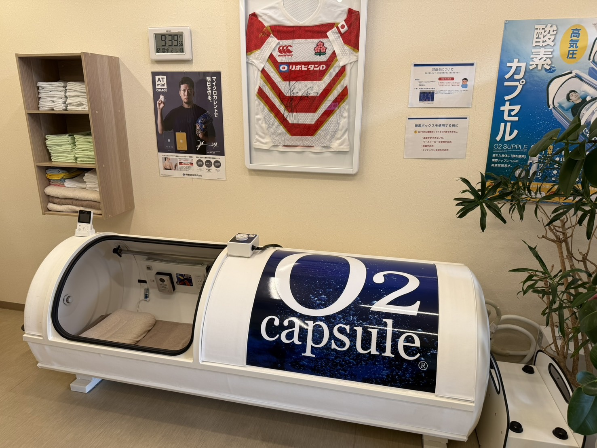
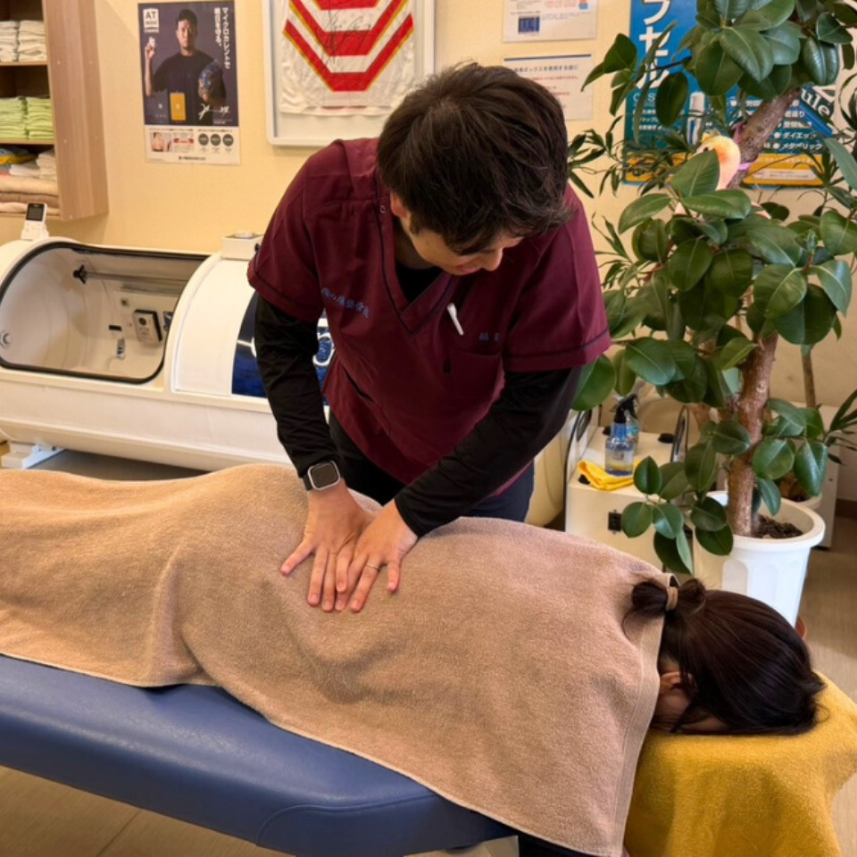
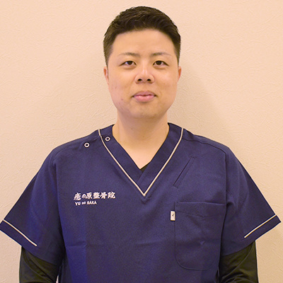
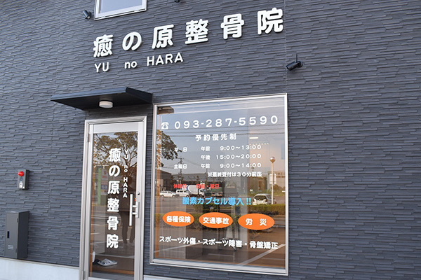

🫧
地域初の酸素カプセル
施術との相乗効果で回復を早める高気圧酸素カプセルを導入。
北九州市若松区・若松駅から車で5分
〜 治して、整えて、強くする。癒の原整骨院 〜
痛みを治すだけでなく、整え、強くする。地域初の酸素カプセルと最新治療器、姉妹院での体づくりまで。あなたの「動けるカラダ」を一日も早く取り戻すお手伝いをします。
そのお悩み、癒の原整骨院にお任せください。
施術との相乗効果で回復を早める高気圧酸素カプセルを導入。
最新機器を組み合わせ、痛みの根本原因にアプローチします。
自然治癒力を最大限に引き出す、一人ひとりに合わせた施術。
各種保険・自賠責に対応。窓口負担0円のケースも。

酸素濃度を30%・1.3気圧まで高め、全身にすみずみまで酸素を届けます。疲労回復・睡眠改善・美肌など多彩な効果が期待できます。

立体動態波・微弱電流・神経筋刺激で、手技では届きにくい深部の痛みや神経性のしびれにまでアプローチ。プロの現場でも使われる治療器です。

事故直後は症状がなくても、後から首の痛み・しびれが現れることも。自賠責保険適用なら窓口負担0円。早めのご相談を。

院長 原口 匡平 Kyohei Haraguchi
若松で育った院長が、令和元年11月に地元・若松区北湊町で開業しました。「患者様が持つ治す力（自然治癒力）を最大限に引き出す」ことを使命に、身体の痛みと気持ちの両方を癒す施術を目指しています。
スポーツ外傷・障害にも対応し、いち早く競技生活へ復帰できるよう最善の治療法でサポート。お一人おひとりに合わせたオーダーメイド施術をお約束します。

| 院名 | 癒の原整骨院 |
|---|---|
| 住所 | 〒808-0027 福岡県北九州市若松区北湊町5-62 愛暮利伊フォーチュン北湊Ⅱ 2号室 |
| 電話 | 093-287-5590 |
| アクセス | 若松駅から車で5分／ラ・ムー若松店 目の前 |
| 駐車場 | 11台（共有スペース） |
| 受付時間 | 月〜金 | 土 | 日・祝 |
|---|---|---|---|
| 午前 9:00– | 〜13:00 | 〜14:00 | 休診 |
| 午後 15:00– | 〜20:00 | 休み |
※最終受付は終了の30分前まで。
ご予約優先です。お電話またはLINEから事前にご予約いただくとスムーズにご案内できます。当日のご来院も可能な範囲で対応します。
はい。捻挫・打撲・挫傷（肉離れ）など原因がはっきりしたケガには各種健康保険が適用されます。詳しくは受付でご案内します。
自賠責保険が適用される場合、窓口負担は0円です。保険会社とのやり取りもサポートします。
はい、施術なしで酸素カプセルのみのご利用も可能です。30分・60分コースをご用意しています。
共有スペースに11台分ございます。ラ・ムー若松店の目の前です。
治すだけじゃ、もったいない。整骨院から始める15分の運動習慣。
痛みを治したあとは、“痛みが出ない体づくり”を。柔道整復師が監修する、短時間・低負荷・安全設計の運動習慣で、再発しにくい体へ。当院との併用で、回復から予防までトータルにサポートします。
癒の原整骨院は、北九州市若松区北湊町（若松駅から車で5分・ラ・ムー若松店 目の前）にある整骨院です。腰痛・肩こり・ぎっくり腰・寝違え・坐骨神経痛・五十肩・スポーツ外傷など、急なケガから慢性的な不調まで幅広く対応しています。
地域で初めて導入した酸素カプセルと最新の治療器を備え、「治す力（自然治癒力）を最大限に引き出す」オーダーメイド施術で、一日も早い回復をサポート。交通事故・むち打ち治療や労災にも対応し、各種保険・自賠責保険が利用できます。平日は夜20時まで受付、駐車場11台完備で、お仕事帰りやお車での通院にも便利です。若松区周辺で痛みやお体の不調にお悩みの方は、お気軽にご相談ください。
痛みのことも、酸素カプセルのことも、交通事故のことも。あなたの「回復」を全力でサポートします。